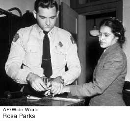

7. The advance of civil rights and gender issues (middle to late 1900's)
7. The advance of civil rights and gender issues (middle to late 1900's)
The U.S. civil rights movement,
epitomized by the case of Brown v. Board of Education of Topeka
(1954) and by Rosa Park's memorable bus ride (1955), produced legislation
guaranteeing civil rights (1964). The movement and the "I Have a Dream"
speech of civil rights leader Martin Luther King, Jr. (1963) eventually
stimulated a widespread change in public opinion.

Gender issues also emerged
from the trauma of the 1950's and 1960's. The feminist movement began
with the publication of Simone de Beauvoir's essay "The Second
Sex" (1949) and Betty Friedan's book The Feminine Mystique
(1963) and matured in the 1970's. The position and role of women in
society, exemplified by universal suffrage in the United States (the
19th Amendment) in 1920, was followed by the struggle for women's control
of their own bodies. The possibility of control of fertility (the birth
control pill, 1960) freed many women to develop their intellectual and
aesthetic abilities.
Since the 1940's, women have
played an increasingly important role in the fine arts. Feminist art
of the 1970's evolved into a powerful widespread movement in which women
artists began to be represented in galleries and museums, and women
scholars, critics, and teachers created a new "canon" of masterpieces.
The antidiscrimination legislation of the civil rights movement also
helped the gay community. In the 1990's, gays began to receive some
measure of recognition and acceptance.
More information:
|